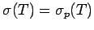
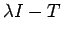
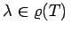
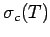
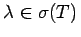
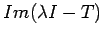
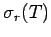
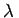
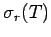
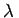

Inhalt Index DeskTop Bronstein

 Funktionalanalysis Stetige lineare Operatoren und Funktionale Elemente der Spektraltheorie linearer Operatoren Spektrum eines Operators
Funktionalanalysis Stetige lineare Operatoren und Funktionale Elemente der Spektraltheorie linearer Operatoren Spektrum eines Operators


Ein wesentlicher Unterschied zwischen dem endlichdimensionalen Fall, der im wesentlichen in der linearen Algebra betrachtet wird, und der Situation im unendlichdimensionalen Fall, mit dem sich die Funktionalanalysis befaßt, besteht zumindest an dieser Stelle darin, daß in ersterem stets  gilt, während in letzterem das Spektrum in der Regel Punkte enthält, die keine Eigenwerte von T sind. Ist  injektiv und surjektiv, dann gilt wegen des Satzes über die Stetigkeit des Inversen . Im Kontrast zum endlichdimensionalen Fall, bei dem die Surjektivität automatisch aus der Injektivität folgt, muß im unendlichdimensionalen Falle weitaus differenzierter vorgegangen werden.
Die Menge  aller , für die injektiv und  dicht in  liegt, heißt stetiges oder kontinuierliches Spektrum und die Menge  aller der , mit injektivem und nichtdichtem Wertebereich, heißt Rest- oder Residualspektrum des Operators
liegt, heißt stetiges oder kontinuierliches Spektrum und die Menge  aller der , mit injektivem und nichtdichtem Wertebereich, heißt Rest- oder Residualspektrum des Operators  .
.
Für einen beschränkten linearen Operator T im komplexen BANACH-Raum  gilt die disjunkte Vereinigung
gilt die disjunkte Vereinigung